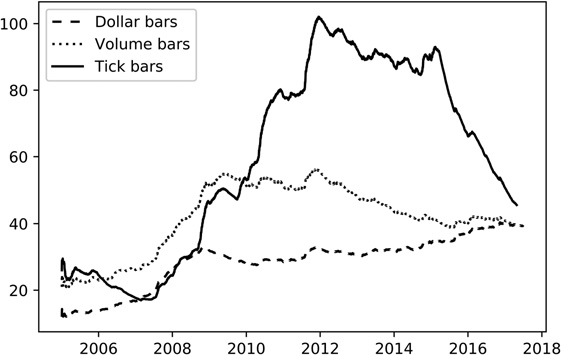
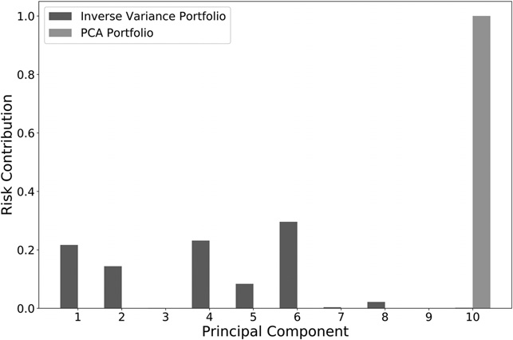
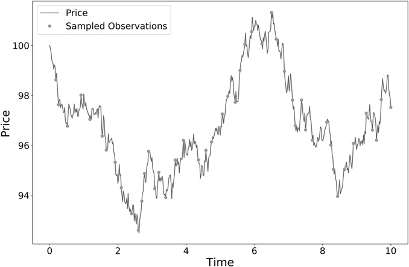

第一部分：数据分析
金融数据结构
2.1 动机
本章将学习如何处理非结构化金融数据，并从中提炼出适用于 ML 算法的结构化数据集。通常情况下，你不应直接使用他人已处理好的数据集，因为这样大概率只会发现别人已知或即将发现的规律。理想的起点应是一批非结构化的原始数据，通过你自己的处理方式，从中提取出具有信息量的特征。
2.2 金融数据的基本类型
金融数据的形态多种多样。表 2.1 列出了金融数据的四种基本类型，从左到右，数据的多样性依次增加。下面分别介绍它们的特点和用途。
| 基本面数据 | 市场数据 | 分析数据 | 另类数据 |
|---|---|---|---|
|
|
|
|
2.2.1 基本面数据
基本面数据涵盖可从监管申报文件和商业分析中获取的信息，主要为会计数据，按季度披露。此类数据的一个显著特点是存在披露延迟。你必须准确确认每个数据点的发布时间，确保分析仅在信息公开之后方可使用。一个常见的初学者错误是假设这些数据在报告期末即已发布，而实际上从未如此。
例如，彭博发布的基本面数据以报告覆盖的最后一天为索引，而实际发布日期通常要晚 1.5 个月。换句话说，彭博把这些数值记在了市场当时还不知道它们的日期上。每年都有大量论文使用这种时间错位的基本面数据，因子投资文献尤其常见。把数据时间正确对齐后，其中相当一部分结论便无法复现。
基本面数据的第二个特点是经常被回填或修订。“回填”是给缺失数据补上一个值，即使这个值在当时还无人知晓；“修订值”则是对首次发布错误的更正。公司可能在首次披露很久以后，多次修订某个季度的业绩，数据供应商也可能直接用修订值覆盖初始值。问题在于，首次发布时市场并不知道这些修订值。有些数据供应商会为每个变量保存多组发布日期和数值，以避免这个问题。例如，一次季度 GDP 数据通常有三个版本：初值和随后两个月的两次修订值。即便如此，研究中仍经常有人把最终修订值放到首次发布日期，甚至放到报告期最后一天。第 11 章讨论回测错误时，我们会再次说明这种做法及其影响。
基本面数据高度标准化且频率极低。由于市场参与者对其可及性极高，其中可供挖掘的剩余价值相当有限。尽管如此，它与其他数据类型结合使用时仍可能发挥一定作用。
2.2.2 市场数据
市场数据涵盖在交易所（如 CME）或交易场所（如 MarketAxess）发生的全部交易活动。理想情况下，数据供应商会提供原始数据流，其中包含各类非结构化信息，例如可用于完整重建委托簿的 FIX 报文，或 BWIC（竞争性报价征询）的全部响应记录。每位市场参与者都会在交易记录中留下具有辨识度的痕迹；只要有足够的耐心，你就能找到预判竞争对手下一步行动的方法。例如，TWAP 算法会留下非常独特的交易痕迹，掠夺性算法可以利用这些痕迹，抢在使用 TWAP 的交易者进行日终交易之前先行下单；这类日终交易通常是为了对冲敞口（Easley、López de Prado 与 O'Hara [2011]）。手动使用 GUI 下单的交易员通常按整手交易，利用这一点可以估计某一时点成交量中有多大比例来自人工交易员，并将其与特定市场行为联系起来。
FIX 数据的吸引力之一，是它不像基本面数据那样容易处理。这类数据的规模也很大，每天会产生超过 10 TB 的数据，因此更值得用于策略研究。
2.2.3 分析数据
分析数据可视为衍生数据，基于原始来源加工而成，原始来源可以是基本面数据、市场数据、另类数据，甚至是其他分析数据的集合。分析数据的特点不在于信息内容本身，而在于它无法直接从原始来源获取，且已经过特定方式的加工处理。投资银行和研究机构出售通过对公司商业模式、经营活动、竞争格局及前景展望等进行深入分析而产生的有价值信息。部分专业机构出售从另类数据中提取的统计指标，例如从新闻报道和社交媒体中提取的情感倾向。分析数据的优点在于，信号已从原始来源中为你提取完毕。其缺点则在于：分析数据可能成本高昂，其生产方法论可能存在偏差或不够透明，且你并非唯一的使用者。
2.2.4 另类数据
Kolanovic 与 Krishnamachari [2017]将另类数据分为三类：个人产生的数据（社交媒体、新闻、网络搜索等）、业务流程产生的数据（交易记录、企业数据、政府机构数据等）和传感器产生的数据（卫星、地理位置、天气、CCTV 等）。常见的卫星图像或视频数据会监测油轮动向、隧道车流或停车场占用率。另类数据真正特别的地方，是它属于一手信息，还没有反映到其他数据来源中。在 Exxon Mobil 公布利润增长、股价大涨、分析师评论最新财报以前，油轮航行、钻井活动和管道运输早已发生；几个月后，其他类型的数据才会反映出这些活动。另类数据的两大问题是成本和隐私。这类“情报收集”价格不菲，被监测的公司可能反对，更不用说可能被一并监控的无关人员。另一方面，另类数据让我们有机会处理真正独特而且难加工的数据集。请记住，越难存储、整理和使用的数据，往往越有潜力。如果一个数据集让数据基础设施团队很头疼，它很可能就值得研究：竞争对手也许因为实施困难而没有尝试，或做到一半放弃了，或从一开始就处理错了。
2.3 数据条（bar）
要把 ML 算法用于非结构化数据，首先要解析原始数据，从中提取有用信息，再按统一格式保存。大多数 ML 算法都要求输入数据采用表格形式。
金融从业者通常把这类表格中的每一行称为“数据条”（bar）。bar 的构建方法可以分为两类：（1）文献中常见的标准方法；（2）更先进的信息驱动方法，资深从业者已经在使用，但学术期刊中暂时还看不到。本节介绍如何构建这些 bar。
2.3.1 标准 bar
一些 bar 构建方法在金融业非常常见，大多数数据供应商的 API 都直接提供。它们把到达时间不规则的观测序列（通常称为“非均匀序列”）转换成按规则采样得到的均匀序列。
2.3.1.1 时间条（time bar）
时间条按固定时间间隔采样，例如每分钟采样一次。通常记录以下信息：
- 时间戳
- 成交量加权平均价（VWAP）
- 开盘价（即第一笔成交价）
- 收盘价（即最后一笔成交价）
- 最高价
- 最低价
- 成交量等。
时间条可能是实务界和学术界最常用的 bar，但最好避免使用，原因有两点。第一，市场处理信息的速度并不恒定。开盘后一小时远比中午前后的一小时活跃；期货市场则通常在午夜前后较为清淡。人类按照日照周期安排生活很自然，但今天的市场主要由算法运行，人工只做较宽松的监督。对算法而言，CPU 计算周期比钟表时间间隔更重要（Easley、López de Prado 与 O'Hara [2011]）。因此，时间条会在低活跃时段采样过多，在高活跃时段采样不足。第二，按时间采样的序列往往有较差的统计性质，例如序列相关、异方差和收益率不服从正态分布（Easley、López de Prado 与 O'Hara [2012]）。GARCH 模型在一定程度上就是为了处理不当采样造成的异方差。接下来会看到，让 bar 跟随交易活跃度生成，可以从一开始就避开这个问题。
2.3.1.2 tick 条（tick bar）
tick 条的思路很直接：累计成交笔数达到预设阈值时，就记录前面列出的采样变量，如时间戳、VWAP 和开盘价等。
例如，可以每累计 1,000 笔成交采样一次。这样，采样频率便与信息到达速度的代理指标——tick 产生速度——同步。Mandelbrot 与 Taylor [1967]是最早发现按交易笔数采样具有良好统计性质的学者之一：“固定交易笔数内的价格变化可能服从高斯分布；固定时间内的价格变化则可能服从方差无限的帕累托稳定分布。由于任意时间段内的交易笔数是随机的，这两种说法并不矛盾。”此后，多项研究证实，按交易活跃度采样可以让收益率更接近 IID 正态分布（参见 Ané 和 Geman [2000]）。这一点很重要，因为许多统计方法都假设观测值来自 IID 高斯过程。直观地说，只有随机变量的分布保持稳定，我们才能据此推断；tick 条通常比时间条更适合做统计推断。构建 tick 条时还要留意异常值。许多交易所在开盘和收盘时进行集合竞价。在竞价期间，订单簿只积累买卖报价，不立即撮合；竞价结束后，系统会按集合竞价撮合价公布一笔规模很大的成交。这笔成交的规模可能相当于数千笔普通 tick，却只被记录为一个 tick。
2.3.1.3 成交量条
tick 条的一个问题是，订单拆分会导致 tick 数量出现一定的随意性。例如，假设卖盘上有一笔规模为 10 手的挂单。若我们买入 10 手，该笔订单将被记录为一笔 tick。若卖盘上改为有 10 笔各 1 手的挂单，则我们同一笔买入将被记录为 10 笔独立成交。此外，撮合引擎的协议出于操作便利，可能会将一笔成交进一步拆分为多笔人为的部分成交。成交量条通过每当证券成交量达到预定数量（股数、期货合约数等）时进行采样，从而规避上述问题。例如，无论涉及多少笔 tick，每当期货合约成交达 1,000 手时，我们均可对价格进行采样。现在很难想象，但在 20 世纪 60 年代，数据供应商很少发布成交量数据，因为客户主要关注的是 tick 价格。在成交量数据也开始被报告之后，Clark [1973]发现，按成交量采样得到的收益率具有更好的统计性质，也就是比 tick 条更接近 IID 高斯分布。成交量条优于时间条或 tick 条的另一个原因，是许多市场微观结构理论研究价格与成交量之间的关系。按其中一个变量采样，能让这类分析更方便，第 19 章会进一步说明。
2.3.1.4 成交额条
成交额条是在累计成交金额达到预设阈值时采样。这里所说的“美元”只是泛指证券的计价货币。
实际中没人会说“欧元条”“英镑条”或“日元条”，不过“金条”倒是一个有趣的双关。下面用两个例子说明成交额条的道理。假设一只股票在某段时间上涨了 100%。期末卖出价值 1,000 美元的股票，只需要期初买入同等金额时一半的股数。也就是说，成交股数取决于实际成交金额。因此，当价格波动较大时，按成交额而不是 tick 数或成交量构建 bar 更合理。实证数据也支持这一点。对 E-mini S&P 500 期货使用固定的 bar 阈值时，每天生成的 tick 条和成交量条数量会随年份剧烈变化；成交额条的日数量变化则小得多。图 2.1 给出了三种采样方法在固定阈值下，每日 bar 数量的指数加权平均值。成交额条还有一个优点：证券存续期间，发行在外股数常会因公司行为多次改变。即使已经调整拆股和反向拆股，增发和回购等行为仍会影响 tick 数和成交量；股票回购在 2008 年大衰退后尤其常见。成交额条通常不易受这些行为影响。不过，成交额条的阈值也不必一直固定，可以根据公司的自由流通市值（股票）或未偿债务规模（固定收益证券）动态调整。

2.3.2 信息驱动 bar
信息驱动 bar 会在新信息进入市场时提高采样频率。这里的“信息”采用市场微观结构中的含义。第 19 章会讲到，市场微观结构理论很重视带符号成交量持续失衡，因为这通常意味着知情交易者正在参与。让采样跟随知情交易的出现，可能使我们在价格达到新均衡以前作出决策。本节介绍几种衡量信息到达速度的指标，并据此生成 bar。
2.3.2.1 tick 不平衡 bar
考虑一个 tick 序列 \(\{(p_t,v_t)\}_{t=1,\ldots,T}\)，其中 \(p_t\)表示 tick t 的价格，\(v_t\)表示 tick t 的成交量。所谓 tick 规则定义序列 \(\{b_t\}_{t=1,\ldots,T}\)其中
其中 \(b_t\in\{-1,1\}\)，边界条件 \(b_0\)取 \(b_T\)上一根 bar 末尾的值。tick 不平衡 bar（TIB）的思路是：tick 不平衡程度超过预期时就结束当前 bar 并采样。我们要确定 tick 索引 T，使带符号 tick 的累计值超过给定阈值。下面说明如何确定 T。第一步，将 T 时刻的 tick 不平衡量定义为
其次，计算 \(\theta_T\)在 bar 起始时刻的期望值，\(\mathbb{E}_0[\theta_T]=\mathbb{E}_0[T](P[b_t=1]-P[b_t=-1])\)，其中 \(\mathbb{E}_0[T]\)是 tick bar 的期望规模，\(P[b_t=1]\)是某一 tick 被判定为买入的无条件概率，\(P[b_t=-1]\)是某一 tick 被判定为卖出的无条件概率。由于 \(P[b_t=1]+P[b_t=-1]=1\)，则
实际计算时，\(\mathbb{E}_0[T]\)可用历史 bar 的 T 值计算指数加权移动平均来估计；而\(2P[b_t=1]-1\)可用历史 bar 中 \(b_t\)值的指数加权移动平均来估计。第三步，将 tick 不平衡 bar（TIB）定义为 \(T^*\)个连续 tick 构成的子集，并满足：
其中预期不平衡量的大小由 |\(2P[b_t=1]-1\)| 给出。当 \(\theta_T\)的不平衡程度超出预期时，较小的 T 即可满足上述条件。因此，TIBs 在知情交易（即触发单边交易的信息不对称）存在时会更频繁地生成。事实上，我们可以将 TIBs 理解为包含等量信息的交易桶（无论成交量、价格或 tick 数如何）。
2.3.2.2 成交量/成交额不平衡 bar
成交量不平衡 bar（VIB）和成交额不平衡 bar（DIB）是 tick 不平衡 bar（TIB）的扩展：当成交量或成交额的不平衡程度偏离预期时进行采样。这里沿用 TIB 的 tick 规则和边界条件 \(b_0\)，下面定义如何确定下一个采样点 T。第一步，将 T 时刻的不平衡量定义为
其中 \(v_t\)可以表示成交证券数量（VIB），也可以表示成交金额（DIB）。\(v_t\)的含义决定采用前一种还是后一种方式采样。第二步，计算 \(\theta_T\)在 bar 开始时的期望：
记 \(v^+\) = \(P[b_t=1]\)\(\mathbb{E}_0[v_t|b_t=1]\)，\(v^-\) = \(P[b_t=-1]\)\(\mathbb{E}_0[v_t|b_t=-1]\)，则
可以把 \(v^+\)和 \(v^-\)看作把 \(v_t\)的初始期望分解成买方贡献和卖方贡献两部分。于是，
实际计算时，\(\mathbb{E}_0[T]\)可用历史 bar 的 T 值计算指数加权移动平均来估计；而\(2v^+-\mathbb{E}_0[v_t]\)可用历史 bar 中 \(b_t\) \(v_t\)乘积的指数加权移动平均来估计。第三步，将 VIB 或 DIB 定义为 \(T^*\)个连续 tick 构成的子集，并满足：
其中预期不平衡量的大小由 |\(2v^+-\mathbb{E}_0[v_t]\)| 给出。当 \(\theta_T\)的不平衡程度超过预期时，较小的 T 就能满足条件。这相当于成交量条和成交额条的信息驱动版本。与前面的 bar 一样，它能减轻 tick 拆分和异常值带来的问题；同时，由于 bar 的大小会动态调整而不是固定不变，它也更能适应公司行为。
2.3.2.3 tick 连续同向流 bar（tick runs bar）
TIB、VIB 和 DIB 分别用 tick 数、成交量和成交额衡量订单流不平衡。大型交易者会扫过订单簿、使用冰山订单，或把母单拆成多个子单，这些做法都会在 \(\{b_t\}_{t=1,\ldots,T}\)序列中留下连续同向成交的痕迹。因此，可以监测总体成交中的买卖方向，并在连续同向成交偏离预期时采样。第一步，将当前连续同向流的长度定义为
其次，计算 \(\theta_T\)在 bar 开始时的期望：
实际计算时，\(\mathbb{E}_0[T]\)可用历史 bar 的 T 值计算指数加权移动平均来估计；而 \(P[b_t=1]\)可用历史 bar 中买入 tick 占比的指数加权移动平均来估计。第三步，将 tick 连续同向流 bar（TRB）定义为 \(T^*\)个连续 tick 构成的子集，并满足：
其中，连续同向流的预期 tick 数由下式给出：\(\max\{P[b_t=1],1-P[b_t=1]\}\)。当 \(\theta_T\)表示的单边 tick 数超过预期时，较小的 \(T\)即可满足条件。注意，这里的“连续同向流”允许中间出现方向切换：我们不是寻找最长的连续序列，而是分别累计买方和卖方的 tick 数，两者不相互抵消。构建 bar 时，这种定义比直接量最长连续序列更实用。
2.3.2.4 成交量/成交额连续同向流 bar（volume/dollar runs bar）
成交量连续同向流 bar（VRB）和成交额连续同向流 bar（DRB）把前面的定义分别扩展到成交量和成交额。当某一方向的成交量或成交额超过一个 bar 的预期水平时，就进行采样。沿用 tick 规则的记号，我们需要确定当前 bar 最后一条观测的索引 T。
第一步，将一段连续同向成交对应的成交量或成交额定义为
其中 \(v_t\)可以表示成交证券数量（VRB），也可以表示成交金额（DRB）。\(v_t\)的含义决定采用前一种还是后一种方式采样。第二步，计算 \(\theta_T\)在 bar 起始时刻的期望值，
实际计算时，\(\mathbb{E}_0[T]\)可用历史 bar 的 T 值计算指数加权移动平均来估计；\(P[b_t=1]\)可用历史 bar 中买方 tick 占比的指数加权移动平均来估计；\(\mathbb{E}_0[v_t|b_t=1]\)可用历史 bar 中买方成交量的指数加权移动平均来估计；\(\mathbb{E}_0[v_t|b_t=-1]\)可用历史 bar 中卖方成交量的指数加权移动平均来估计。第三步，将成交量连续同向流 bar（VRB）定义为 \(T^*\)个连续 tick 构成的子集，并满足：
上式 max 项给出的预期规模，是 \(P[b_t=1]\)\(\mathbb{E}_0[v_t|b_t=1]\) 与（1 − \(P[b_t=1]\)）\(\mathbb{E}_0[v_t|b_t=-1]\) 两者中的较大值。当 \(\theta_T\) 表示的连续同向成交规模超过预期时，较小的 T 就能满足条件。
2.4 多产品时间序列的处理
有时，我们要为一组金融标的建立时间序列模型，权重还需要随时间动态调整。另一些时候，产品会不定期支付票息或股息，或受到公司行为影响。凡是会改变时间序列性质的事件都必须妥善处理，否则就会人为引入结构突变，误导研究结论（详见第 17 章）。这类问题有很多形式，例如：价差权重会变化；证券篮子的股息或票息需要再投资；篮子需要再平衡；指数成分会调整；到期的合约或证券需要换成新的标的。
期货就是典型例子。根据我的经验，很多人处理期货时会遇到本可避免的麻烦，主要是不知道怎样正确处理展期。期货价差、股票篮子和债券篮子策略也有同样的问题。下一节介绍一种方法，把一篮子证券建模成单一现金类产品。我把它称为“ETF trick（ETF 技巧）”，因为它能把复杂的多产品数据转换成一条类似总回报 ETF 的序列。这样做的好处是，无论底层序列多么复杂、由什么构成，代码都可以统一假设自己交易的是不会到期的现金类产品。
2.4.1 ETF trick（ETF 技巧）
假设我们要开发一套交易期货价差的策略。与直接交易单一标的相比，价差会带来几个麻烦。第一，价差由一组随时间变化的权重决定，因此即使各标的价格不变，价差本身也可能收敛。模型可能误以为这种由权重变化造成的收敛产生了 PnL（盈亏的盯市净值）。第二，价差不是价格，所以可能为负，而大多数模型都假设价格为正。第三，各成分的可交易时点不完全同步，因此最新公布的价位未必能同时成交，也不能假设没有延迟风险。执行时还要支付成本，例如跨越买卖价差。解决办法之一，是构建一条时间序列，表示在该价差上投入 1 美元后的价值。序列变化反映 PnL，数值始终为正（最差也只是无限接近于零），并且考虑执行缺口。之后便可像处理 ETF 一样，用这条序列建模、生成信号和交易。假设已有一段由第 2.3 节任一方法生成的 bar 历史数据，每个 bar 包含以下字段：
- \(o_{i,t}\)：原始开盘价，对应标的 \(i=1,\ldots,I\)、bar \(t=1,\ldots,T\)。
- \(p_{i,t}\)：原始收盘价，对应标的 \(i=1,\ldots,I\)、bar \(t=1,\ldots,T\)。
- \(\varphi_{i,t}\)：一个点位对应的美元价值，对应标的 \(i=1,\ldots,I\)、bar \(t=1,\ldots,T\)。其中已经包含汇率换算。
- \(v_{i,t}\)：成交量，对应标的 \(i=1,\ldots,I\)、bar \(t=1,\ldots,T\)。
- \(d_{i,t}\)：标的 i 在 bar t 产生的持有收益（carry）、股息或票息。这个变量也可用于计入保证金成本或融资成本。
上述所有标的 \(i=1,\ldots,I\)在 bar \(t=1,\ldots,T\)均可交易。换句话说，即使某些标的在整个时间区间 \([t-1,t]\)内并非始终可交易，至少在 t − 1 和 t 两个时点均可成交，也就是市场当时开放并能执行订单。下面考虑一篮子期货。
它由配置向量 \(\omega_t\)描述各标的权重，并在集合 \(B\subseteq\{1,\ldots,T\}\)所列的 bar 上再平衡或展期。投入 1 美元后，组合价值序列 \(\{K_t\}\)为：
其中 \(K_0=1\)，并以此作为初始资产管理规模（AUM）的起点。变量 \(h_{i,t}\)表示标的 \(i\)在时刻 \(t\)的持仓量（证券或合约数量）。变量 \(\delta_{i,t}\)表示 \(t-1\)和 \(t\)期间标的 \(i\)的市场价值变化。请注意，每当 \(t\in B\)时，盈亏都会再投资，因此不会出现负价格。股息 \(d_{i,t}\)已经计入 \(K_t\)，策略无需再单独处理这些股息。
公式项 \(\omega_{i,t}(\sum_{i=1}^{I}|\omega_{i,t}|)^{-1}\)对 \(h_{i,t}\)的作用是降低配置杠杆。期货展期时，我们可能还不知道 \(p_{i,t}\)，即新合约在展期时点 \(t\)的价格，因此用 \(o_{i,t+1}\)代替，因为它在时间上最接近。
令 \(\tau_i\)表示标的 \(i\)每交易 1 美元名义金额所产生的成本。例如，\(\tau_i=1E-4\) （一个基点）。策略还需要知道每个观测 bar \(t\)：
- 再平衡成本：可变成本 \(\{c_t\}\)表示配置再平衡产生的成本：\(c_t=\sum_{i=1}^{I}(|h_{i,t-1}|p_{i,t}+|h_{i,t}|o_{i,t+1})\varphi_{i,t}\tau_i,\ \forall t\in B\)。若用 \(c_t\)对 \(K_t\)作调整，做空价差就会在再平衡时产生虚假利润。在代码中，可以把 \(\{c_t\}\)视为一笔负股息。
- 买卖价差：买卖成本 \(\{\tilde{c}_t\}\)表示买入或卖出一单位虚拟 ETF 的成本：\(\tilde{c}_t=\sum_{i=1}^{I}|h_{i,t-1}|p_{i,t}\varphi_{i,t}\tau_i\)。买入或卖出一单位时，应扣除这项成本 \(\tilde{c}_t\)，这等价于跨越该虚拟 ETF 的买卖价差。
- 成交量：可交易量 \(\{v_t\}\)由篮子中交易最不活跃的成员决定。令 \(v_{i,t}\)表示标的 \(i\)在 bar \(t\)内的成交量。可交易的篮子单位数为 \(v_t=\min_i\{v_{i,t}/|h_{i,t-1}|\}\)。
交易成本函数不一定是线性的，策略可以根据上述信息模拟非线性成本。借助 ETF trick（ETF 技巧），一篮子期货或单个期货合约都可以建模成不会到期的单一现金类产品。
2.4.2 PCA 权重
有兴趣的读者可以参阅 López de Prado 与 Leinweber 介绍的多种实用对冲权重计算方法 [2012]，以及 Bailey 与 López de Prado 的方法 [2012]。为使内容完整，下面介绍一种推导向量 \(\{\omega_t\}\)的方法；上一节使用的正是这个向量。考虑一个 IID 多元高斯过程，其参数包括均值向量 \(\mu\)，维度为 \(N\times1\)；协方差矩阵 \(V\)，维度为 \(N\times N\)。这个过程描述一组分布稳定的随机变量，例如股票收益率、债券到期收益率变化或期权波动率变化。对于由 \(N\)个标的构成的投资组合，我们希望计算配置向量 \(\omega\)，使风险按指定比例分配到 \(V\)的各主成分上。第一步，进行谱分解：\(VW=W\Lambda\)，其中 \(W\)的列重新排序，使 \(\Lambda\)的对角元素按降序排列。第二步，给定配置向量 \(\omega\)，可以计算投资组合的风险为
其中 \(\beta\)表示配置向量 \(\omega\)在正交基上的投影。第三步，\(\Lambda\)是对角矩阵，因此 \(\sigma^2=\sum_{n=1}^{N}\beta_n^2\Lambda_{n,n}\)。
第 n 个主成分所承担的风险为
其中 \(R^\prime \mathbf{1}_N=1\)，且 \(1_N\)是由 \(N\)个 1 组成的向量。可以将 \(\{R_n\}_{n=1,\ldots,N}\)理解为风险在各正交成分之间的分布。第四步，计算向量 \(\omega\)，使其实现用户指定的风险分布 \(R\)。由前述步骤可知，\(\beta=\{\sigma\sqrt{R_n/\Lambda_{n,n}}\}_{n=1,\ldots,N}\)，它表示新正交基下的配置。第五步，原始基下的配置由 \(\omega=W\beta\)给出。将 \(\omega\)重新缩放只会同比缩放 \(\sigma\)，不会改变风险分布。图 2.2 展示了逆方差配置下各主成分的风险贡献。

可以看到，几乎所有主成分都承担了一部分风险，包括方差最大的第 1 和第 2 主成分。PCA 组合则不同，只有方差最小的主成分承担风险。代码清单 2.1 实现了这种方法。用户可以通过参数 riskDist 传入自定义风险分布 R；该参数可以为 None。如果 riskDist 为 None，代码会把全部风险分配给特征值最小的主成分，并缩放最后一个特征向量，使其匹配 \(\sigma\) （riskTarget）。
def pcaWeights(cov, riskDist=None, riskTarget=1.):
# Following the riskAlloc distribution, match riskTarget
eVal, eVec = np.linalg.eigh(cov) # must be Hermitian
indices = eVal.argsort()[::-1] # arguments for sorting eVal desc
eVal, eVec = eVal[indices], eVec[:, indices]
if riskDist is None:
riskDist = np.zeros(cov.shape[0])
riskDist[-1] = 1.
loads = riskTarget * (riskDist / eVal) ** .5
wghts = np.dot(eVec, np.reshape(loads, (-1, 1)))
# ctr = (loads / riskTarget) ** 2 * eVal # verify riskDist
return wghts2.4.3 单一期货展期
单一期货合约可以看成单腿价差，因此也能用 ETF trick（ETF 技巧）处理展期。不过，更直接的等价方法是构造累计换月价差序列，再从价格序列中减去它。代码清单 2.2 给出了一种实现，使用从 Bloomberg 下载并存入 HDF5 表的 tick 条数据。Bloomberg 字段含义如下：
- FUT_CUR_GEN_TICKER：标识该价格属于哪个合约，每次展期时都会变化。
- PX_OPEN：该 bar 对应的开盘价。
- PX_LAST：该 bar 对应的收盘价。
- VWAP：该 bar 对应的成交量加权平均价（VWAP）。
函数 rollGaps 的参数 matchEnd 决定采用前向展期调整（matchEnd=False）还是后向展期调整（matchEnd=True）。前向调整后，连续序列起点的价格
与原始序列起点一致；后向调整后，连续序列终点的价格与原始序列终点一致。
def getRolledSeries(pathIn, key):
series = pd.read_hdf(pathIn, key='bars/ES_10k')
series['Time'] = pd.to_datetime(series['Time'], format='%Y%m%d%H%M%S%f')
series = series.set_index('Time')
gaps = rollGaps(series)
for fld in ['Close', 'VWAP']:
series[fld] -= gaps
return series
def rollGaps(
series,
dictio={
'Instrument': 'FUT_CUR_GEN_TICKER',
'Open': 'PX_OPEN',
'Close': 'PX_LAST',
},
matchEnd=True,
):
# Compute gaps at each roll, between previous close and next open
rollDates = series[dictio['Instrument']].drop_duplicates(keep='first').index
gaps = series[dictio['Close']] * 0
iloc = list(series.index)
iloc = [iloc.index(i) - 1 for i in rollDates] # index of days prior to roll
gaps.loc[rollDates[1:]] = (
series[dictio['Open']].loc[rollDates[1:]]
- series[dictio['Close']].iloc[iloc[1:]].values
)
gaps = gaps.cumsum()
if matchEnd:
gaps -= gaps.iloc[-1] # roll backward
return gaps经展期调整的价格用于模拟盈亏（PnL）和投资组合的盯市价值。不过，确定头寸规模和资本占用时仍应使用原始价格。经展期调整的价格确实可能为负，尤其是在期货曲线处于升水（contango）结构且合约价格下跌时。可以对棉花 2 号期货或天然气期货序列运行代码清单 2.2 来验证。通常我们希望得到非负的连续序列，此时可按以下步骤构造投入 1 美元后的价值序列：（1）计算经展期调整的期货价格；（2）用调整后价格的变动除以上一期原始价格，得到收益率 r；（3）用这些收益率构造价格序列，即 (1+r).cumprod()。代码清单 2.3 展示了这一过程。
raw = pd.read_csv(filePath, index_col=0, parse_dates=True)
gaps = rollGaps(raw, dictio={'Instrument': 'Symbol', 'Open': 'Open', 'Close': 'Close'})
rolled = raw.copy(deep=True)
for fld in ['Open', 'Close']:
rolled[fld] -= gaps
rolled['Returns'] = rolled['Close'].diff() / raw['Close'].shift(1)
rolled['rPrices'] = (1 + rolled['Returns']).cumprod()2.5 特征采样
到这里，我们已经学会怎样把一批非结构化金融数据整理成连续、同质且结构化的数据集。虽然可以直接把 ML 算法用在整个数据集上，但通常并不合适。原因有两点。第一，有些 ML 算法无法有效处理很大的样本量，例如 SVM。第二，ML 算法从真正相关的样本中学习时通常更准确。假设要预测下一次绝对幅度达到 5% 的价格变动是上涨 5% 还是下跌 5%。随便挑一个时点来预测，准确率往往很低；如果只在某些触发事件发生后让分类器预测方向，就更可能找到有预测力的特征。本节介绍怎样对 bar 采样，从而构造包含相关训练样本的特征矩阵。
2.5.1 降采样
前面提到，从结构化数据集中抽取观测样本，一个目的就是减少拟合 ML 算法所需的数据量，这也称为降采样。常见做法有两种：按固定步长依次采样（linspace 采样），或按均匀分布随机采样（均匀采样）。linspace 采样简单，但步长是人为选定的，而且结果可能取决于从哪个 bar 开始。均匀采样会在全部 bar 中均匀抽取样本，因而减轻这两个问题。不过，两种方法都有同一个缺点：抽到的未必是预测力最强或信息量最大的那部分观测。
2.5.2 基于事件的采样
投资组合经理通常会在某个事件发生后建仓，例如出现结构突变（第 17 章）、识别出信号（第 18 章）或观察到市场微观结构现象（第 19 章）。事件可能是宏观经济数据发布、波动率突然上升，或价差明显偏离均衡水平等。我们可以先把某类事件标记为重要，再让 ML 算法判断在这种情况下能否作出可靠预测。如果不能，就重新定义什么算事件，或换一组特征再试。下面介绍一种实用的事件采样方法。
2.5.2.1 CUSUM 过滤器
CUSUM 过滤器是一种质量控制方法，用来检测某个测量量的均值是否偏离目标值。下面考虑一组相互独立且同分布（IID）的观测值。
设 \(\{y_t\}_{t=1,\ldots,T}\)来自局部平稳过程。定义累积和：
边界条件为 \(S_0=0\)。首次出现 \(t\)满足 \(S_t\ge h\)时触发操作，其中 \(h\)是阈值（过滤器宽度）。注意，\(S_t=0\)发生在 \(y_t\le \mathbb{E}_{t-1}[y_t]-S_{t-1}\)时。这个零下界会忽略一部分向下偏离；否则，这些偏离会使 \(S_t\)变为负值。这样设置，是为了从每次重置为零的位置开始，累计识别一连串向上偏离。具体来说，达到阈值等价于：
这种上行累计也可以扩展到下行累计，从而得到对称 CUSUM 过滤器：
Lam 与 Yam [1997]提出一种投资策略：当价格相对前期高点或低点的绝对收益率达到 \(h\)时，交替发出买入和卖出信号。作者证明，这等价于 Fama 与 Blume 研究的“过滤器交易策略” [1966]。本书使用 CUSUM 过滤器的方式不同：仅当 \(S_t\ge h\)时才对 bar t 采样，并在此时将 \(S_t\)重置。代码清单 2.4 给出了对称 CUSUM 过滤器的一种实现，其中
def getTEvents(gRaw, h):
tEvents, sPos, sNeg = [], 0, 0
diff = gRaw.diff()
for i in diff.index[1:]:
sPos = max(0, sPos + diff.loc[i])
sNeg = min(0, sNeg + diff.loc[i])
if sNeg < -h:
sNeg = 0
tEvents.append(i)
elif sPos > h:
sPos = 0
tEvents.append(i)
return pd.DatetimeIndex(tEvents)
函数 getTEvents 接收两个参数：待过滤的原始时间序列 gRaw 和阈值 \(h\)。CUSUM 过滤器有一个实用优点：gRaw 在阈值附近来回波动时，不会连续触发多个事件，而布林带等常见市场信号会有这个问题。要触发一个事件，gRaw 必须从上次重置点累计移动 \(h\)。图 2.3 展示了 CUSUM 过滤器从价格序列中选出的样本。变量 \(S_t\)可以基于第 17–19 章将介绍的任一特征，例如结构突变统计量、熵或市场微观结构指标。比如，当 SADF 与上一次重置水平的偏离足够大时（第 17 章会定义），就可以认定发生了一个事件。得到这组事件驱动的 bar 后，再让 ML 算法判断这些事件是否提供了可用于交易的信息。
参考文献
- Ané, T. and H. Geman (2000): “Order flow, transaction clock and normality of asset returns.” Journal of Finance, Vol. 55, pp. 2259–2284.
- Bailey, David H., and M. López de Prado (2012): “Balanced baskets: A new approach to trading and hedging risks.” Journal of Investment Strategies (Risk Journals), Vol. 1, No. 4 (Fall), pp. 21–62.
- Clark, P. K. (1973): “A subordinated stochastic process model with finite variance for speculative prices.” Econometrica, Vol. 41, pp. 135–155.
- Easley, D., M. López de Prado, and M. O’Hara (2011): “The volume clock: Insights into the high frequency paradigm.” Journal of Portfolio Management, Vol. 37, No. 2, pp. 118–128.
- Easley, D., M. López de Prado, and M. O’Hara (2012): “Flow toxicity and liquidity in a high frequency world.” Review of Financial Studies, Vol. 25, No. 5, pp. 1457–1493.
- Fama, E. and M. Blume (1966): “Filter rules and stock market trading.” Journal of Business, Vol. 40, pp. 226–241.
- Kolanovic, M. and R. Krishnamachari (2017): “Big data and AI strategies: Machine learning and alternative data approach to investing.” White paper, JP Morgan, Quantitative and Derivatives Strategy. May 18.
- Lam, K. and H. Yam (1997): “CUSUM techniques for technical trading in financial markets.” Financial Engineering and the Japanese Markets, Vol. 4, pp. 257–274.
- López de Prado, M. and D. Leinweber (2012): “Advances in cointegration and subset correlation hedging methods.” Journal of Investment Strategies (Risk Journals), Vol. 1, No. 2 (Spring), pp. 67–115.
- Mandelbrot, B. and M. Taylor (1967): “On the distribution of stock price differences.” Operations Research, Vol. 15, No. 5, pp. 1057–1062.